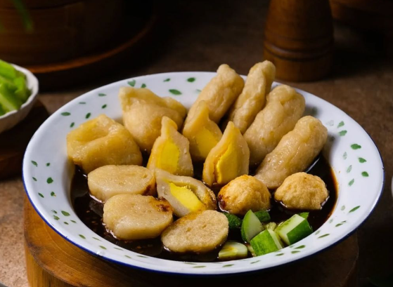
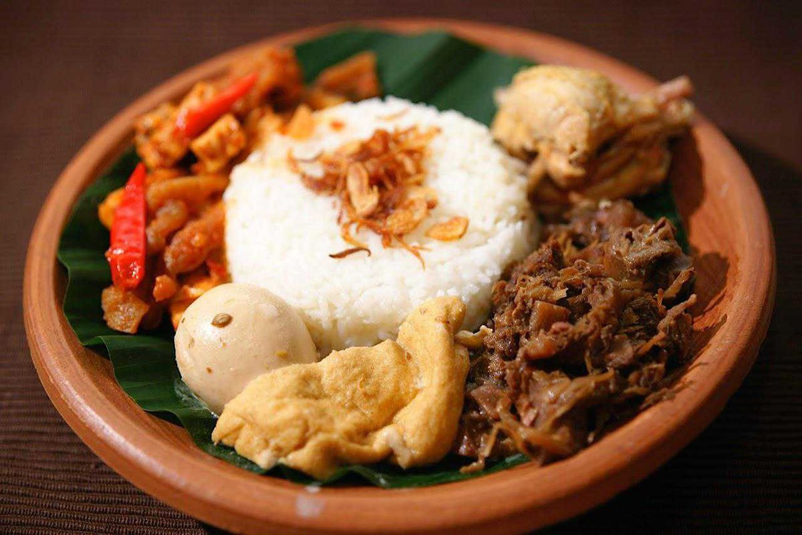
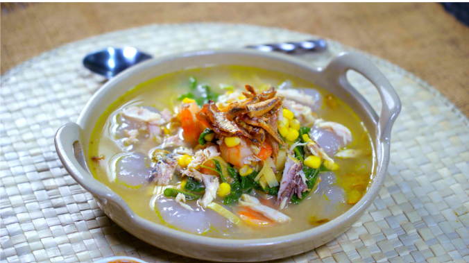
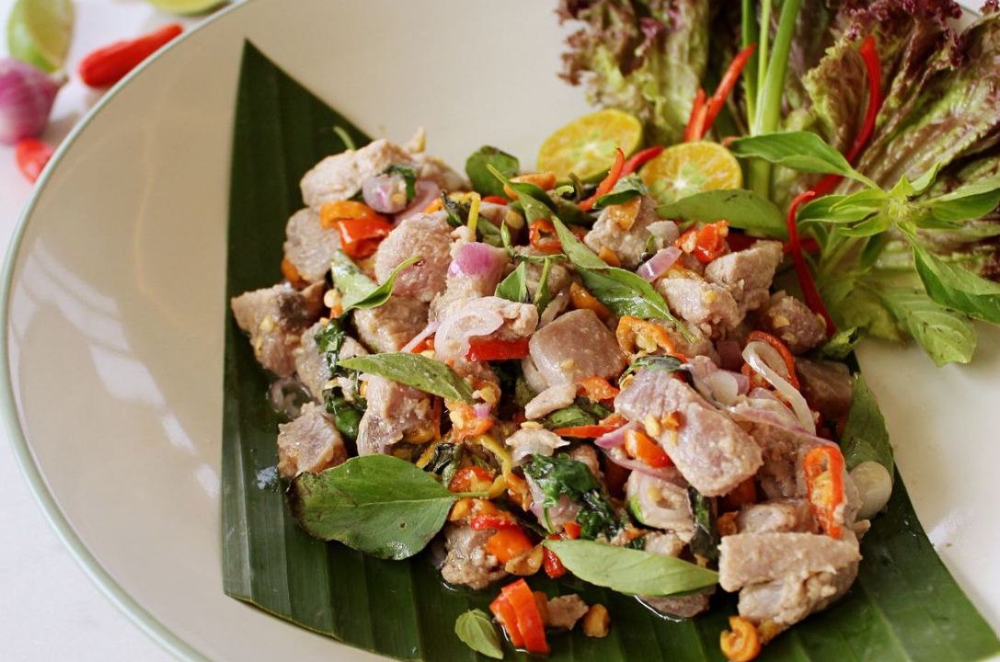
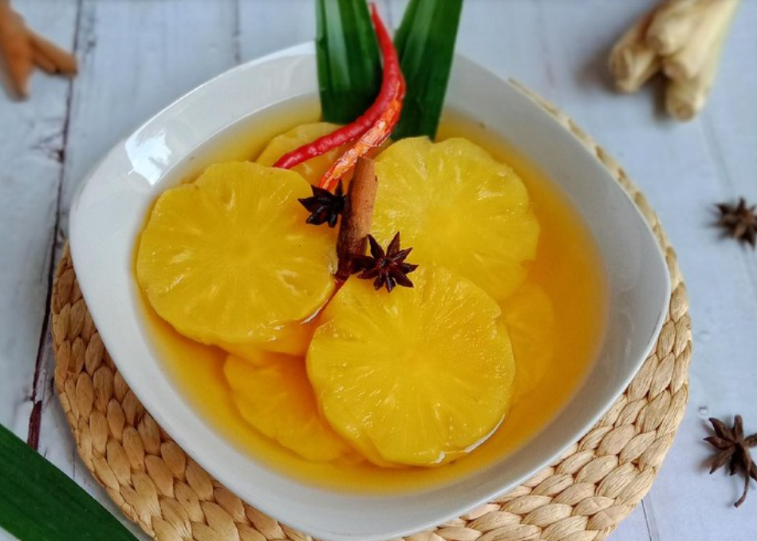

Pempek
Palembang - Sumatera Selatan

Bubur Pedas
Pontianak - Kalimantan Barat

Pelas Jagung
Bojonegoro - Jawa Timur

Gudeg
Yogyakarta - Daerah Istimewa Yogyakarta
Ledre
Bojonegoro - Jawa Timur

Bika Ambon
Medan - Sumatra Utara

Kapurung
Luwu - Sulawesi Selatan
Getuk Lindri
Sumedang - Jawa Barat

Gohu Ikan
Ternate - Maluku Utara

Empal Gentong
Cirebon, Jawa Barat

Pacri Nanas
Pontianak - Kalimantan Barat
Rendang
Padang - Sumatra Barat

Nasi Tutug Oncom
Tasikmalaya - Jawa Barat

Sate Srepeh
Rembang - Jawa Tengah

Soto Betawi
Betawi, DKI Jakarta